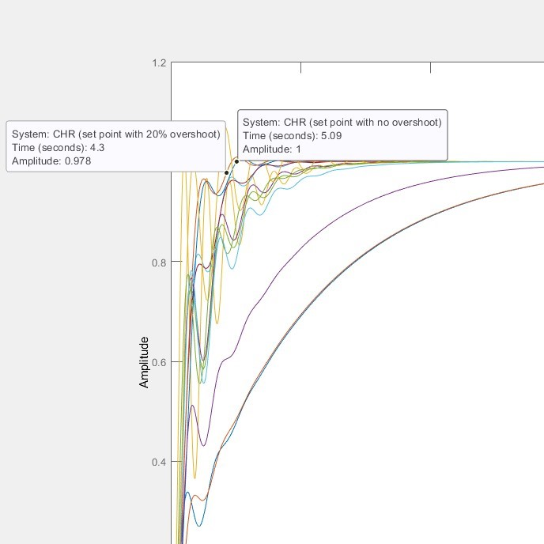
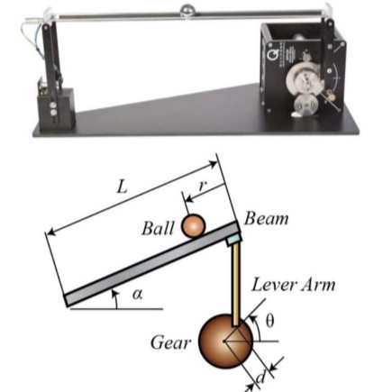
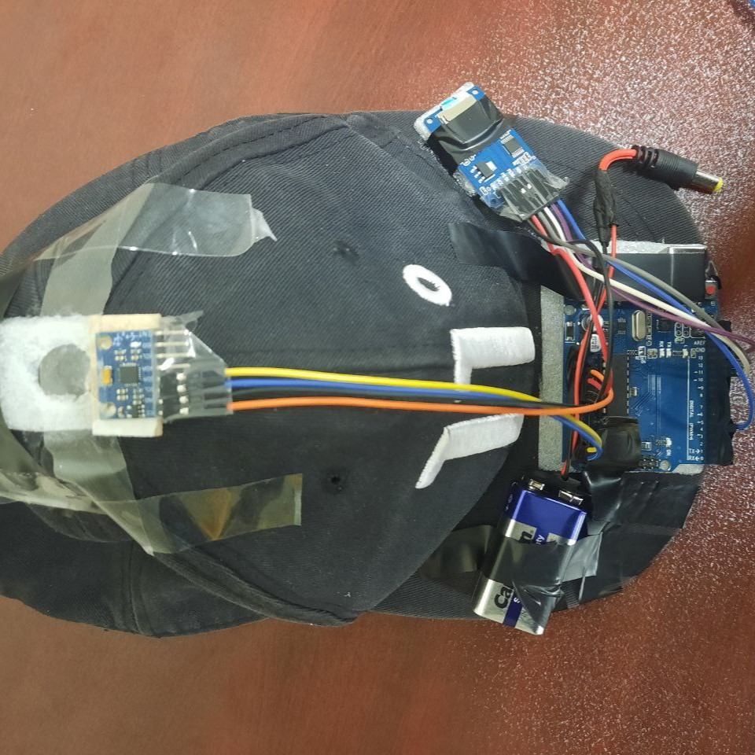
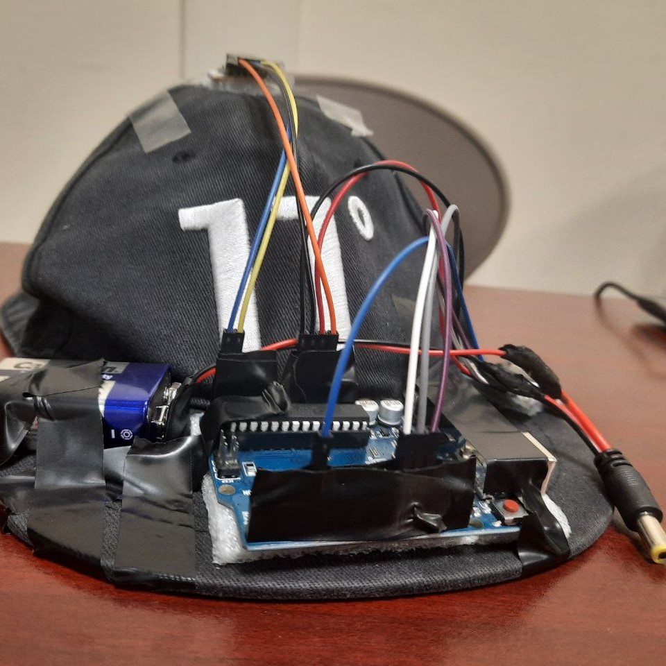
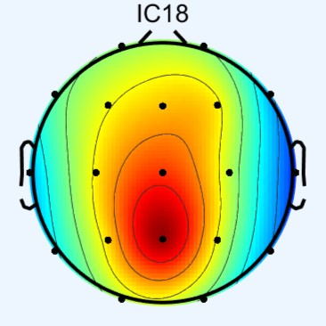

|
Yashar Zafari Haqqi Currently looking for Graduate Research Positions in Robotics! I'm graduating from B.Sc. in Mechanical Engineering (Robotics Track) at Sharif University of Technology, where I also work as an undergraduate research assistant in the Social & Cognitive Robotics Lab under Prof. Alireza Taheri's supervision. Additionally, I have served as teaching assistant in various robotics and engineering courses. |
{kind=link}
Research InterestsI'm interested in Robotic Dexterous Grasping and Manipulation, Humanoid Robotics, Haptics and Learning-Based Control. |
Papers |

A paper is under preparation. |
Projects |
|


|
Ball & Beam Control System Design
Course Project Automatic Controller Design - Prof. Aria Alasty - Winter 2023 Sharif University of Technology code The project involves designing a control system for the ball and beam setup. The control objective is to accurately stabilize the ball at the center of the beam. Huge shout out to my friend and teammate in this project, Erfan Radfar. |
|
_B


|
Activity Recognition Hat
Course Project Measurement & Control Systems - Prof. Hossein Nejat - Winter 2023 Sharif University of Technology code In this project, I developed a simple activity recognition system using a hat fitted with sensors. The hat can recognize walking and running. |
|  |
Analysis of Phase Locking Value during Olfactory Stimulation as a Biomarker for Alzheimer's Disease in EEG Signals
Course Project Signals & Systems - Prof. Hamid K. Aghajan - Spring 2023 Sharif University of Technology code The goal of this project was to identify early biomarkers for Alzheimer's disease and related brain disorders through analysis of EEG signals during olfactory stimulation. |
Miscellanea |
Teaching Assistance |
Robotics, Prof. Saeed Behzadipour, Sep. 2024 - Jan. 2025
Dynamics of Machinery, Prof. Saeed Behzadipour, Jan. 2024 - Jan. 2025 Aerial Robotics, Dr. Amin Talaeizadeh, Feb. 2024 - Jul. 2024 Dynamics, Prof. Alireza Taheri, Sep. 2023 - Jan. 2024 Statics, Prof. Alireza Taheri, Feb. 2022 - Jul. 2022 |
|
Design and source code from Jon Barron's website |